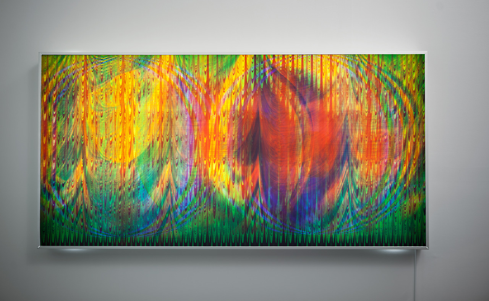
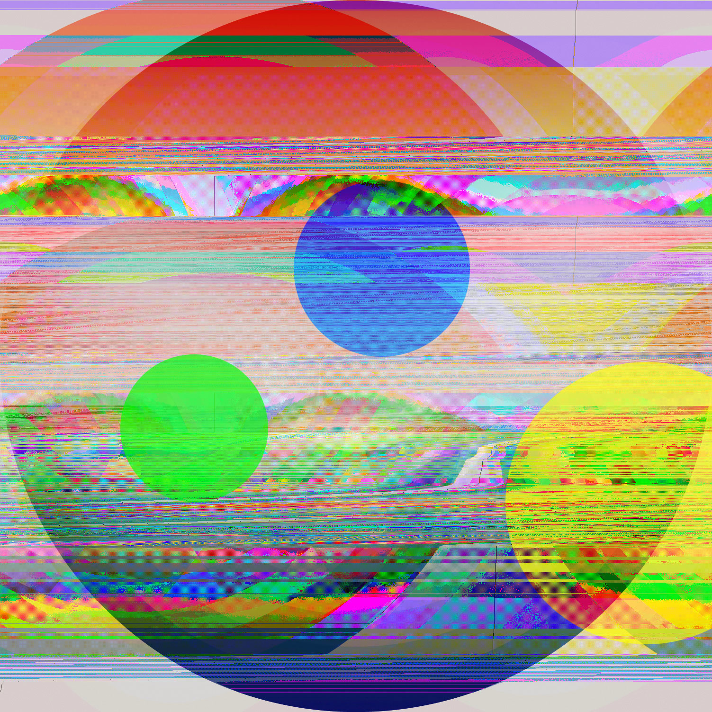
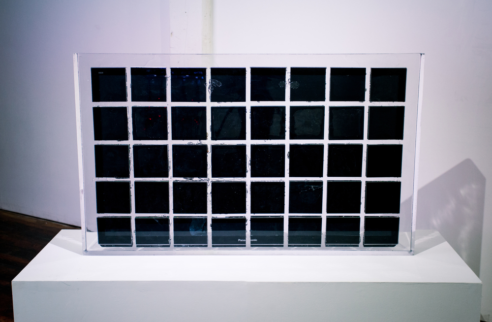

electronics’ technology is developing very fast. Like computers, people can do many things on it. This technology brings many things to humans that make many things possible in our life. For example, before many artists only draw in the paper, or create artwork they need to find many objects, this is a common way for artists to draw pictures or create artwork. There is a thing that is different from common art, media art makes artists create artwork by electronics. Media art can create art from the electronics media, there are many ways in media art, like computer graphics, animation, 3D printing and else. There are three prominent media artists and also are my favorite media artists. They are Daniel Temkin, Eva Papamargariti and Jamie Zigelbaum. They all have their professional field in media art.
is using many modern technologies from computer creation. That many artists create many artworks and that shows many pictures with programming language. There is a media artist is Daniel Temkin. Daniel Temkin is an artist, and he also teaches at some colleges and universities. He makes images with code, programming languages. In Media Art history, he led a three-day session on Glitch and Oulipo. His production was also published in academic journals. Temkin’s artworks have many layers, colorful and make feeling with technology. He was also awarded “The 2014 He 2 Creative Capital Warhol Foundation Arts Writers Grant.” This grant program is helping and supporting artists‘ causes. There are his productions that are stunning.
This name “Glichometry Circles#9” Glitchometry is a kind of artwork made by Temkin. This artwork connects art and computer science; code and machine create new artwork. Layers, color, shape, and line crossing each other, that combine a nice picture. This programming language creates a new way for art. As the traditional art,artists can draw many pictures, the programming language also can do the same thing and create new more new things.
As the Glichometry, there also have many productions. For example Glichometry #4, there are many circles crossing and overlapping each other. If you stand far aways to see these pictures, it can see the mountain and just like a place's landscape. For the perception, it is not messy, and that has many forms that can show to the audience. Temkin uses programming language drawing pictures that are original in media art. This style tested artists’ sense of logic and graph. It is a hard way for drawing, but the effect must be stunning.
spcases and position also are important. Eva Papamargariti is very skilful for spaces in artwork. Papamargariti graduated from the University of Thessaly in Architecture. She focuses on media, printed material; also digital space and material reality’s she explores their relationship. Papamargariti’s work delves into the two and three dimensional rendered spaces and scenarios. Through the equipment and mechanical devices to create scenes in the artwork. Papamargariti also has many collaborations with famous brands, and she has been to many cities’ museums, created exhibitions and got awards.

Papamargariti’s artwork creates the model that shows this thing‘s’ material or substance. Like this Git made by Papamargariti. In this Gif, those objects move around with the rose. Rose is the center, the movement in this Gif all is around the rose. Every object in this Gif has their substances. Those details make this digital media artwork able to connect to reality material of objects. The object is interspersed between media and real.
was born in Cambridge Massachusetts. He has an advanced degree in the media field, and he also won the 2010 designer of the future. As a media artist, in Zigelbaum’s concept of design artwork, most are about computation and human organism relationship. He is enlightened by the science field, and explores more information. Zigelbaum had written in the New York Times. Zigelbaum’s artworks also exhibit in many galleries that is hornor. Zizelbaum has an exhibition of new work that is “No There There”. “No There There” is about the pixel and moving image in programmatically.
In this structure of works, there shows digital artworks. Zigelbaum created a television that has 40 screens. This sculptural object is made by resin. In this exhibition there are many screens showing videos and images. Audiens can touch and feel about it. Jamie Zigelbaum also created a website that is all about himself’s works. This makes media art more easy to contract between digital and real.
media art also has the same situation with them. Media artists can create more artwork with digital media. Art is part of life, media art is connecting artists’ creative and technology. That makes many artworks become possible and more showoff to audiences. Media art is technology production by artists, but media art’s concept is very similar to traditional art. For media artwork, it focuses more on spaces and digital; like three dimensional, programming language or material. For audiences they would have more ways to feel or understand this artwork and artists’ ideas. Therefore, media art would have more expansion capacity in art.